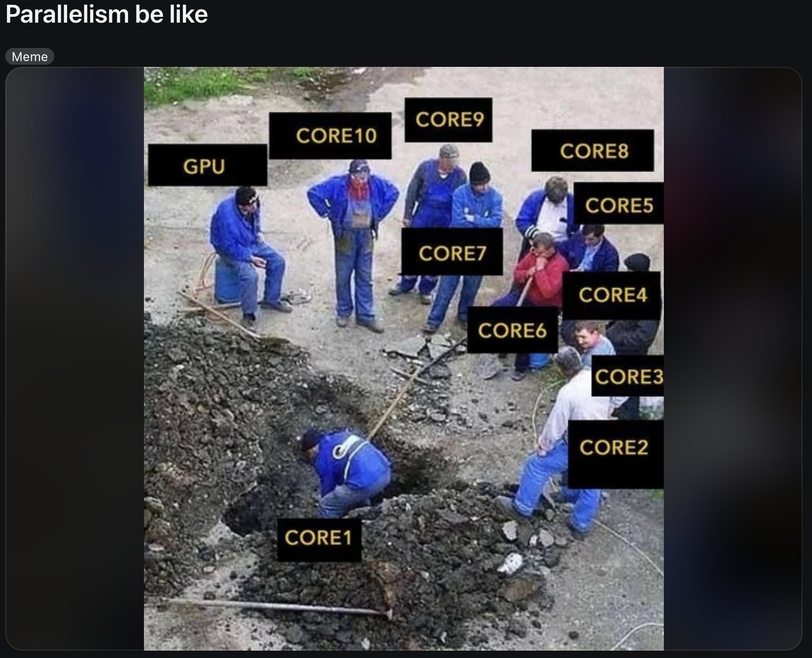
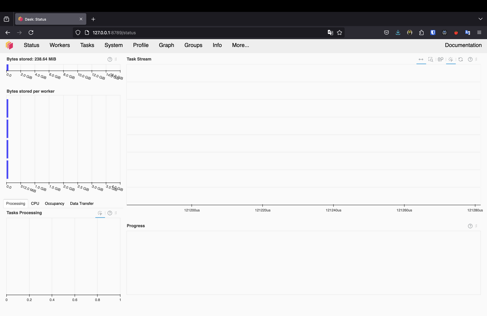
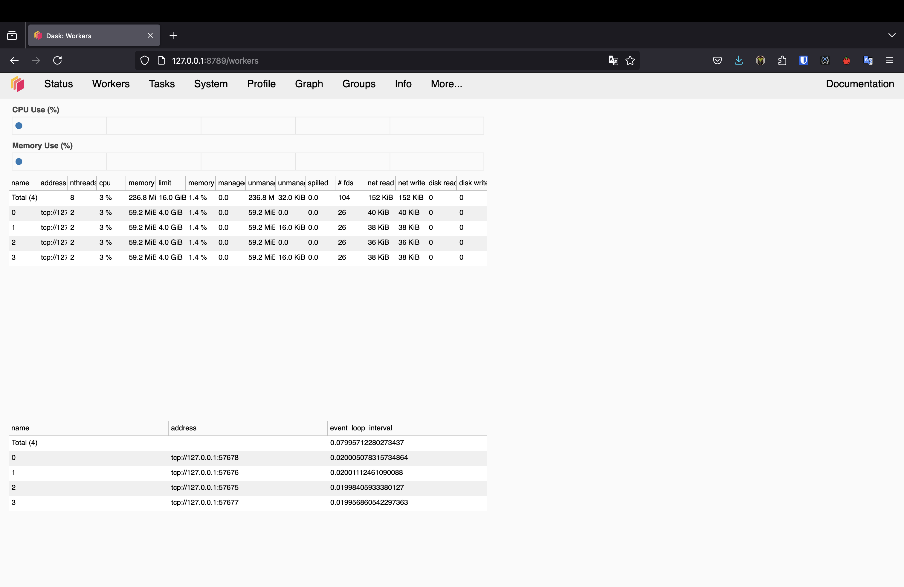
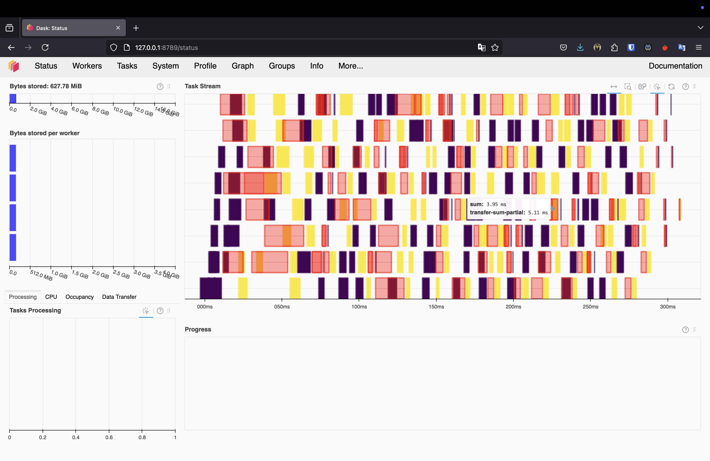
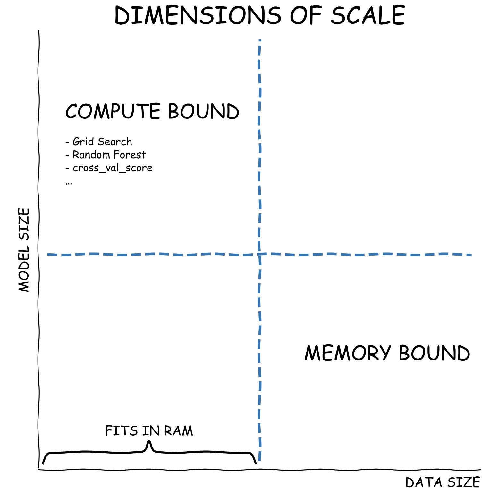

Lecture 22 - Parallelising Data Analysis with Dask and AutoML
Author
Affiliation
Danilo Freire
Department of Data and Decision Sciences Emory University
Hello again! 😊 How’s everything?
Brief recap of last class 📚
Parallel computing
Parallel computing is a type of computation in which many calculations or processes are carried out simultaneously
Python has several libraries that allow you to parallelise your code
We discussed the joblib library, which is a simple and effective way to parallelise your code
But we spent most of our time discussing Dask, which is currently the de facto standard for parallel computing in Python
We also saw that parallel computing is not a panacea: it can be hard to implement and may not always lead to performance improvements
But when it works, it works great! 🚀
Today’s agenda 📅
Lecture outline
Today we will continue our discussion on parallel computing
We will focus on parallelising data analysis tasks with Dask ML
More specifically, we will discuss how to parallelise the training of machine learning models, and how to use automated machine learning (AutoML) tools to speed up the process
We will also learn about Dask Clusters, which allow you to scale your computations across multiple machines (or just one!)

Dask Clients and Clusters 🌐
What is a Dask Cluster?
Workers and schedulers
A Dask Cluster is a collection of Dask workers that can be used to parallelise your computations
In plain English, a Dask Cluster is a group of computational engines (cores, GPUs, servers, etc.) that work together to solve a problem
Workers provide two functions:
Compute tasks as directed by the scheduler, the scheduler being the brain of the cluster
Store and serve computed results to other workers or clients
Workers are the reason why lazy evaluation speeds up computations
A simple example of workers interacting with a scheduler can help explain how lazy evaluation works:
Scheduler -> Eve: Compute a <- multiply(3, 5)!
Eve -> Scheduler: I've computed a and am holding on to it!
Scheduler -> Frank: Compute b <- add(a, 7)!
Frank: You will need a. Eve has a.
Frank -> Eve: Please send me a.
Eve -> Frank: Sure. a is 15!
Frank -> Scheduler: I've computed b and am holding on to it!
What is a Dask Cluster?
Workers and schedulers
How do workers know what to do?
The scheduler assigns tasks to workers based on their availability
Workers can be on the same machine or on different machines
Workers can be CPUs or GPUs
Dask workers save their data as a Python dictionary, which is then sent to the scheduler as a thread in the concurrent.futures library
These processes can automatically restart and scale up without any intervention from the user
The optimal number of workers depends on the size of the data and the complexity of the computations, but often the default configuration is sufficient
In an adaptive cluster, you set the minimum and maximum number of workers and let the cluster add and remove workers as needed
Dask also provides a dashboard to monitor the performance of your cluster
Setting up a Dask Cluster
First, we need to install Dask and the distributed scheduler. I tested this with dask==2024.5.0 and distributed==2024.5.0
Using dask.distributed requires that you set up a Client
This should be the first thing you do if you intend to use dask.distributed in your analysis
It offers low latency, data locality, data sharing between the workers, and is easy to set up
from dask.distributed import LocalCluster, Client# Specify a different port for the dashboard# Use fewer workers and threads to avoid resource issuescluster = LocalCluster(dashboard_address=':8789', n_workers=2, threads_per_worker=2)client = Client(cluster)# Print the dashboard linkprint(f"Dask dashboard is available at: {cluster.dashboard_link}")
/opt/miniconda3/envs/datasci185-py312/lib/python3.12/site-packages/distributed/node.py:182: UserWarning: Port 8789 is already in use.
Perhaps you already have a cluster running?
Hosting the HTTP server on port 50733 instead
warnings.warn(
Dask dashboard is available at: http://127.0.0.1:50733/status
The Client object provides a way to interact with the cluster, submit tasks, and monitor the progress of computations
It is also a context manager, so you can use it in a with statement to ensure that the cluster is closed when you are done with it
You will see a screen like this in your browser:
Dask Client Dashboard

Dask Client Dashboard

Testing the Dask Client
You can test the Dask Client by running a simple computation
import dask.array as da# Create a random array (smaller size for interactive use)# For large arrays, consider using a script or Jupyter notebook instead of terminalx = da.random.RandomState(42).random((5000, 5000), chunks=(1000, 1000))x
Array
Chunk
Bytes
190.73 MiB
7.63 MiB
Shape
(5000, 5000)
(1000, 1000)
Dask graph
25 chunks in 1 graph layer
Data type
float64 numpy.ndarray
# Perform a simple computationy = (x + x.T).sum()# Compute the resulty.compute()
24996218.234081183
The RandomState object is used to set a seed number
We can inspect the client dashboard to see how the computation was distributed across the workers
Troubleshooting Common Issues
If you encounter errors like:
"No buffer space available"
"Stream is closed"
"CommClosedError"
This typically happens when:
Running large Dask computations in an interactive terminal
System runs out of network resources for inter-worker communication
Array size is too large for your system’s resources
Solutions:
Use smaller array sizes
Limit the number of workers and threads
Run code in a Python script instead of interactive terminal
Use Jupyter notebooks which handle resources better
Close and restart your Dask client if it becomes unresponsive
# Better configuration for terminal usefrom dask.distributed import LocalCluster, Client# Use fewer resources for interactive terminal sessionscluster = LocalCluster( dashboard_address=':8789', n_workers=2, # Limit workers threads_per_worker=2, # Limit threads per worker memory_limit='2GB'# Limit memory per worker)client = Client(cluster)
Testing the Dask Client
Testing the Dask Client

Dask ML 🤖
Dimensions of Scale

Addressing the Challenges
Challenge 1: Scaling Model Size
Model size: the number of parameters in a model
If your models become more complex, you need more computational resources to train them
Under this scaling challenge tasks like model training, prediction, or evaluation steps will (eventually) complete, they just take too long
You’ve become compute bound
You can continue to use your current algorithms and libraries (pandas, numpy, scikit-learn, etc), but you need to scale them up
Challenge 2: Scaling Data Size
Data size: the number of samples in your dataset
There are cases where datasets grow larger than RAM (shown along the horizontal axis)
Under this scaling challenge, even loading the data into numpy or pandas becomes impossible
You’ve become memory bound
In this case, you can use a different file format (parquet, Dask DataFrame, etc) together with algorithms that can handle large datasets
What is Dask ML?
Dask ML is a scalable machine learning library built on top of Dask
It provides parallel implementations of many popular machine learning algorithms and libraries, such as scikit-learn, XGBoost, LightGBM, TensorFlow, and PyTorch
Dask ML is built on top of Dask arrays and dataframes, allowing you to scale your machine learning workflows to large datasets
You can use Dask ML to do many tasks, such as model selection, model evaluation, and, most importantly, hyperparameter tuning
The load_digits dataset is a well-known dataset in machine learning, containing 1797 8x8 pixel images of handwritten digits
The main task here is to predict the digit from the image
Dask ML and scikit-learn
Let’s estimate the model with a simple grid search
param_space: a list of settings to try out for the model
C: controls how much to punish mistakes (regularisation, smaller values = more regularisation) to prevent overfitting
This is in exponential notation, so np.logspace(-6, 6, 13) will create a list of 13 values between \(10^{-6}\) and \(10^6\) (!)
gamma: defines how far the influence of a single example reaches (smaller values = model is less sensitive to the data)
This is also in exponential notation, so np.logspace(-8, 8, 17) will create a list of 17 values between \(10^{-8}\) and \(10^8\) (!!)
tol: tells the model when to stop trying to improve
class_weight: options for handling imbalanced data
This is pretty standard scikit-learn code, but with a twist: we are using joblib.parallel_backend('dask') to parallelise the search
This will distribute the search across the workers in the Dask cluster (and we don’t have to worry about it!)
The RandomizedSearchCV object will try out 50 different combinations of hyperparameters and return the best one
Dask ML and scikit-learn
# Load the digits datasetdigits = load_digits() # Define the parameter space to search throughparam_space = {'C': np.logspace(-6, 6, 13), 'gamma': np.logspace(-8, 8, 17),'tol': np.logspace(-4, -1, 4),'class_weight': [None, 'balanced'], }# Create the modelmodel = SVC()search = RandomizedSearchCV( model, param_space, cv=3, n_iter=50, verbose=10)# Perform the search using Daskstart_time = time.time()with joblib.parallel_backend('dask'): search.fit(digits.data, digits.target)end_time = time.time()# Calculate the elapsed timeelapsed_time = end_time - start_time# Print the best parametersprint("Best parameters found: ", search.best_params_)print("Best score: ", search.best_score_)print("Best estimator: ", search.best_estimator_)print("Time taken: {:.2f} seconds".format(elapsed_time))
Fitting 3 folds for each of 50 candidates, totalling 150 fits
Best parameters found: {'tol': 0.1, 'gamma': 0.001, 'class_weight': 'balanced', 'C': 1000.0}
Best score: 0.9760712298274902
Best estimator: SVC(C=1000.0, class_weight='balanced', gamma=0.001, tol=0.1)
Time taken: 4.70 seconds
Now let’s tackle the problems we discussed earlier…
Neither compute nor memory constrained
The model was trained in just a few seconds!
The dataset is small, so we are not memory constrained
The model is not complex, so we are not compute constrained
So in this case we only used Dask to parallelise the search, but we could have used scikit-learn alone
But what if we had a larger dataset or a more complex model?
Memory constrained, but not compute constrained
Here we have a case where the dataset is too large to fit in memory, but there is enough compute power to train the model
It makes sense to use Parquet and Dask DataFrames to load the data in chunks, but this may not be enough
A cool solution is Dask’s dask_mlIncremental class, which can train models on chunks of data
It starts training the model on many hyper-parameters on a small amount of data, and then only continues training those models that seem to be performing well
The command is dask_ml.model_selection.IncrementalSearchCV()
Let’s see an example with 2 million possible hyperparameter combinations and a dataset with 10 million samples (!)
Combined, X and y will take up about 16 GB of memory
We will use the make_classification function from dask_ml.datasets to create the dataset
from dask_ml.datasets import make_classificationX, y = make_classification(n_samples=10000000, n_features=20, chunks=100000, random_state=0)# Create the modelfrom sklearn.linear_model import SGDClassifiermodel = SGDClassifier(tol=1e-3, penalty='elasticnet', random_state=0)# Parameters we want to search throughparams = {'alpha': np.logspace(-2, 1, num=1000),'l1_ratio': np.linspace(0, 1, num=1000),'average': [True, False]}# Perform the searchfrom dask_ml.model_selection import IncrementalSearchCVsearch = IncrementalSearchCV(model, params, random_state=0, decay_rate=None)start_time = time.time()search.fit(X, y, classes=[0, 1])end_time = time.time()# Calculate the elapsed timeelapsed_time = end_time - start_time# Print the best parameters, best score, and the time takenprint("Best parameters found: ", search.best_params_)print("Best score: ", search.best_score_)print("Best estimator: ", search.best_estimator_)print(f"Time taken: {elapsed_time:.2f} seconds")
/opt/miniconda3/envs/datasci185-py312/lib/python3.12/site-packages/dask/base.py:1462: UserWarning: Running on a single-machine scheduler when a distributed client is active might lead to unexpected results.
warnings.warn(
Best parameters found: {'l1_ratio': 0.7837837837837838, 'average': False, 'alpha': 0.03447764054734464}
Best score: 0.70481
Best estimator: SGDClassifier(alpha=0.03447764054734464, l1_ratio=0.7837837837837838,
penalty='elasticnet', random_state=0)
Time taken: 12.66 seconds
Incremental Search
It took less than one minute to train the model, which is pretty fast considering the size of the dataset
My computer has 16 GB of RAM, so I would not be able to load the dataset in memory
But the model runs fine, and I was using my computer normally
Now let’s see another example…
Compute constrained, but not memory constrained
Here we have a case where the model is too complex to train in a reasonable amount of time
Or the models require specialised hardware like GPUs
The best class for this case is HyperbandSearchCV, which is a hyperparameter search algorithm that is based on the Hyperband algorithm
In a nutshell, this algorithm is easy to use, has strong mathematical motivation and often performs well
/opt/miniconda3/envs/datasci185-py312/lib/python3.12/site-packages/dask/base.py:1462: UserWarning: Running on a single-machine scheduler when a distributed client is active might lead to unexpected results.
warnings.warn(
Best parameters found: {'loss': 'log_loss', 'average': True, 'alpha': 0.02271728133026905}
Best score: 0.6
Best estimator: SGDClassifier(alpha=0.02271728133026905, average=True, loss='log_loss')
Time taken: 1.61 seconds
Compute and memory constrained
This is the worst-case scenario, where you have a large dataset and a complex model
In this case, you can use a combination of the strategies we discussed earlier
Use Dask DataFrames to load the data in chunks
Use the HyperbandSearchCV class to search for the best hyperparameters
Apart from this, you can always use cloud computing services like AWS, GCP, or Azure…
… or pray to the machine learning gods 😂
More AutoML 🤖
TPOT
Here we will use TPOT, which is a Python library that automatically creates and optimises machine learning pipelines using genetic programming
TPOT is built on top of scikit-learn and uses a similar syntax
There are several articles about how to optimise AutoML algorithms and quickly find the best model for your data, so I won’t go into too much detail here (but you can check out this article for more information)
First, let’s install TPOT:
pip install "TPOT==0.12.2"
I’m using Python 3.13.2 for this example, so your mileage may vary
Using TPOT
Let’s see an example using the load_digits dataset
import timefrom tpot import TPOTClassifierfrom sklearn.datasets import load_digitsfrom sklearn.model_selection import train_test_splitfrom sklearn.metrics import accuracy_score# Load the digits datasetdigits = load_digits()# Split the dataset into training and testing setsX_train, X_test, y_train, y_test = train_test_split(digits.data, digits.target, train_size=0.75, test_size=0.25)# Create the TPOTClassifier objectstart_time = time.time()tpot = TPOTClassifier(generations=2, population_size=5, verbosity=2, random_state=42)# Fit the modeltpot.fit(X_train, y_train)end_time = time.time()elapsed_time = end_time - start_time# Get predictions and calculate scorey_pred = tpot.predict(X_test)score = accuracy_score(y_test, y_pred)print(f"Score: {score}")print(f"Time taken: {elapsed_time:.2f} seconds")
/opt/miniconda3/envs/datasci185-py312/lib/python3.12/site-packages/sklearn/base.py:1230: FutureWarning: passing a class to None is deprecated and will be removed in 1.8. Use an instance of the class instead.
warnings.warn(
/opt/miniconda3/envs/datasci185-py312/lib/python3.12/site-packages/sklearn/base.py:1270: FutureWarning: passing a class to None is deprecated and will be removed in 1.8. Use an instance of the class instead.
warnings.warn(
“In most realistic settings, a large number of forecasts will be created, necessitating efficient, automated means of evaluating and comparing them, as well as detecting when they are likely to be performing poorly. When hundreds or even thousands of forecasts are made, it becomes important to let machines do the hard work of model evaluation and comparison while efficiently using human feedback to fix performance problems.”
Using Prophet
We will use Prophet and Dask together to parallise the diagnostics stage of research
It does not attempt to parallise the training of the model itself (which is actually quite fast to begin with)
import pandas as pdfrom prophet import Prophet
Importing plotly failed. Interactive plots will not work.
Now let’s use Dask to parallelise the diagnostics stage of the research
Prophet includes a prophet.diagnostics.cross_validation function method, which uses simulated historical forecasts to provide some idea of a model’s quality
This is done by selecting cutoff points in the history, and for each of them fitting the model using data only up to that cutoff point
We can then compare the forecasted values to the actual values
Using Prophet with Dask
Let’s then use Dask to parallelise the diagnostics stage of the research